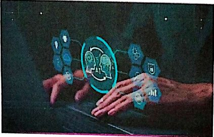
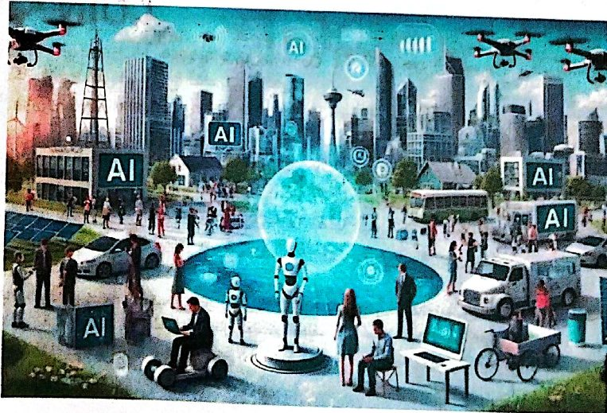

الذكاء الاصطناعي والمجتمع والأخلاقياتArtificial Intelligence, Society and Ethics
نظري · م04أقسام المحاضرة (11)
- المحور الأول: الذكاء الاصطناعي وأثره المجتمعيAxis One: Artificial Intelligence and Its Societal Impact
- تقنية COINCOIN Technology
- نظام AlphaFoldThe AlphaFold System
- تطور النظام وقدراته الحاليةEvolution and Current Capabilities
- نظام PredPolThe PredPol System
- لماذا تم إيقافه؟Why Was It Stopped?
- المنظور الثقافي لتبني الذكاء الاصطناعيThe Cultural Perspective on Adopting AI
- الحوكمة والآثار السياسية للذكاء الاصطناعيGovernance and Political Implications of AI
- المحور الثاني: التحديات الأخلاقية في الذكاء الاصطناعيAxis Two: Ethical Challenges in AI
- فضيحة Cambridge AnalyticaThe Cambridge Analytica Scandal
- أسئلة مقترحةSuggested Questions
المحور الأول: الذكاء الاصطناعي وأثره المجتمعيAxis One: Artificial Intelligence and Its Societal Impact


الذكاء الاصطناعي لم يعد مجرد تقنية تكنولوجية مغلقة داخل المختبرات، بل أصبح قوة دافعة ومؤثرة تعيد تشكيل ملامح الحياة اليومية للمجتمعات البشرية.
إيجابيات الأثر المجتمعي:
- • أتمتة المهام الروتينية.
- • تحسين الرعاية الصحية.
- • تسهيل الوصول للمعلومات.
التحديات المجتمعية:
- • سوق العمل.
- • الفجوة الرقمية.
تقنية COINCOIN Technology
تقنية COIN : وهي اختصار لـ( Contract Intelligence ) أو ذكاء العقود إلى أحد أبرز وأقدم النماذج الناجحة لاستخدام الذكاء الاصطناعي في القطاع المصرفي العالمي.
أطلق بنك JPMorgan Chase هذا البرنامج لإحداث ثورة في كيفية إدارة العمليات القانونية والتمويلية المعقدة.
- • تعتمد التقنية على معالجة اللغة الطبيعية ( NLP)والتعلم الآلي غير الخاضع للإشراف لفحص الوثائق القانونية والمالية المعقدة.
- • توفير الوقت: يقوم البرنامج بمراجعة وتحليل 12,000 اتفاقية قرض تجاري سنوياً في غضون ثوانٍ معدودة.
- • بديل للجهد البشري: قبل هذه التقنية، كان الموظفون القانونيون ومسؤولو القروض يستغرقون حوالي 360,000 ساعة عمل سنويًا لإنجاز نفس المهمة يدوياً
- • استخراج البيانات: تستطيع التقنية استخراج أكثر من 150 خاصية وبنداً قانونياً من العقود غير المهيكلة وتحويلها إلى بيانات رقمية منظمة (مثل شروط أسعار الفائدة، التخلف عن السداد، وجداول الدفع).
- • تقليل الأخطاء: تفوقت التقنية في دقتها على المراجعات البشرية المعرضة للسهو والوقوع في الخطأ نتيجة الإرهاق.
نظام AlphaFoldThe AlphaFold System
نظام AlphaFold : هو منظومة ذكاء اصطناعي ثورية طورتها شركة Google DeepMind لإحداث نقلة نوعية في علم الأحياء، من خلال حل معضلة "طيّ البروتين" ( Protein Folding)بدقة فائقة.
يعتبر هذا النظام أحد أعظم الإنجازات العلمية في القرن الحادي والعشرين، ولقد نال مطوروه جائزة نوبل في الكيمياء لعام 2024 تقديراً لهذا الابتكار الذي اختصر عقوداً من البحث العلمي إلى بضع ثوانٍ.
ما هي المشكلة التي حلها AlphaFold؟
البروتينات هي الآلات الجزيئية الأساسية في كل كائن حي (مثل الأجسام المضادة، الهيموغلوبين، والإنسولين). لكي يؤدي البروتين وظيفته، يجب أن ينطوي شكله المكون من سلسلة أحماض أمينية إلى شكل ثلاثي الأبعاد (3 D)معقد للغاية.
التحدي التاريخي: معرفة الشكل ثلاثي الأبعاد للبروتين الواحد كانت تتطلب سنوات من التجارب المخبرية المعقدة والمكلفة (مثل استخدام أشعة إكس أو المجهر الإلكتروني بالتبريد العميق).
الحل الذكي: يستطيع AlphaFold التنبؤ بالشكل ثلاثي الأبعاد للبروتين بدقة مذهلة تصل إلى مستوى الذرة، بمجرد تزويده بالتسلسل الجيني للأحماض الأمينية، وفي غضون دقائق أو ثوانٍ.
تطور النظام وقدراته الحاليةEvolution and Current Capabilities
المنظومة لم تتوقف عند الإصدار الأول، بل تطورت عبر أجيال متتابعة:
AlphaFold 1 & 2: ركزا على التنبؤ ببنية البروتينات الفردية بدقة تضاهي التجارب المخبرية. وقامت DeepMindبإتاحة قاعدة بيانات مفتوحة تحتوي على الهياكل المتوقعة لـ أكثر من 200 مليون بروتين (وهي تقريباً كل البروتينات المعروفة للعلم).
الإصدار الأحدث AlphaFold 3: لم يعد يقتصر على البروتينات فقط؛ بل أصبح قادراً على نمذجة التفاعلات المشتركة بين البروتينات، والحمض النووي ( DNAو RNA)، والجزيئات الكيميائية الصغيرة ( Ligands). هذا الفهم الشامل لكيفية ترابط جزيئات الحياة يمنح العلماء رؤية غير مسبوقة للعمليات الحيوية داخل الخلايا
نظام PredPolThe PredPol System
نظام PredPol: هو أحد أشهر البرمجيات الخوارزمية وأكثرها إثارة للجدل، صُمم لمساعدة أجهزة إنفاذ القانون على التنبؤ بمواقع وأوقات حدوث الجرائم( Crime prediction) قبل وقوعها. أنشئ النظام عام 2012 كشراكة بين إدارة شرطة لوس أنجلوس ( LAPD)وباحثين من جامعة كاليفورنيا ( UCLA).ورغم الوعود التكنولوجية الكبيرة التي قدمها في البداية، إلا أنه تحول إلى نموذج للتحذير من "تحيز الذكاء الاصطناعي" والرقابة الخوارزمية
كيف يعمل نظام PredPol؟
بدلاً من التنبؤ بـمن سيرتكب الجريمة، ركز نظام PredPol على التنبؤ بـ*أين* و*متى* ستحدث الجريمة (التنبؤ القائم على المكان).
مستوحى من الزلازل: تعتمد الخوارزمية الحاصلة على براءة اختراع على النماذج الرياضية المستخدمة للتنبؤ بالهزات الارتدادية للزلازل. الفكرة هي أن الجريمة تشبه الزلزال؛ إذا وقعت سرقة في مكان ما، فإن احتمالية وقوع سرقة أخرى مجاورة لها تزداد في الفترة الزمنية التالية.
تغذية البيئات: يقوم النظام بتحليل ثلاثة متغيرات أساسية فقط من سجلات الجرائم التاريخية: نوع الجريمة، وموقعها الجغرافي، ووقتها.
خرائط مربعات الحرارة: في بداية كل مناوبة عمل، تولد الخوارزمية خرائط للشرطة تحتوي على مربعات حمراء صغيرة بمساحة (500 × 500 قدم)، تُعلم الدوريات بأن هذه هي "البؤر الساخنة" (Hot Spots) الأكثر عرضة لجرائم الممتلكات (مثل سرقة السيارات أو المنازل) خلال الساعات القادمة
لماذا تم إيقافه؟Why Was It Stopped?
رغم تبني مئات الإدارات الأمنية في أمريكا وبريطانيا للنظام في البداية، إلا أنه واجه انتقادات حقوقية وعلمية لاذعة أدت إلى توقفه بسبب (AI Bias):
1-حلقة التغذية الراجعة المتحيزة ( Feedback Loop):تبين أن النظام يعتمد على بيانات تاريخية ناتجة عن ممارسات شرطية سابقة ومتحيزة. إذا كانت الشرطة تستهدف تاريخياً أحياء ذوي البشرة السمراء أو ذوي الدخل المحدود بالاعتقالات، فسيقرأ النظام هذه البيانات ويأمر الشرطة بالذهاب إلى هناك مجدداً. عند ذهابهم، سيعتقلون أشخاصاً آخرين، وتدخل هذه الاعتقالات الجديدة في النظام، مما يخلق حلقة مفرغة من "الإدانة الافتراضية" والمراقبة المفرطة لتلك المجتمعات.
2-فشل الفعالية الواقعية: كشفت تحقيقات صحفية موسعة (مثل تقرير منصة The Markup)عند تحليل بيانات النظام أن نسبة دقة توقعاته كانت أقل من 0.5% في بعض المدن، وهي نسبة لا تتفوق أبداً على التخمين البشري التقليدي.
3-انتهاك الحقوق المدنية: اعترضت منظمات حقوقية مثل Amnesty International على أن هذه التقنيات تنتهك التعديل الرابع للدستور الأمريكي (الحماية من التفتيش والايقاف دون اشتباه منطقي حقيقي)، حيث يصبح مبرر توقيف المواطن مجرد "حدس كمبيوتر مخادع"
4-الحظر القانوني: امتد أثر هذا الفشل تشريعياً؛ حيث تضمن قانون الذكاء الاصطناعي للاتحاد الأوروبي ((EU AI Act، حظراً صارماً على استخدام أنظمة الذكاء الاصطناعي للتنبؤ باحتمالية ارتكاب الأفراد للجرائم بناء على الأنماط السلوكية والتنميط
المنظور الثقافي لتبني الذكاء الاصطناعيThe Cultural Perspective on Adopting AI
لا تنظر المجتمعات إلى الذكاء الاصطناعي من المنظور نفسه؛ إذ تلعب الثقافات، والقيم، والعادات دوراً حاسماً في سرعة وكيفية تقبل هذه التقنيات.
الروبوت Paro
هو روبوت علاجي تفاعلي متطور مصمم على شكل صغير فقمة القيثارة، ويُصنف كجهاز طبي حيوي ( Class II FDA) مخصص لتقديم الدعم العاطفي والنفسي لكبار السن ومرضى الخرف والتوحد
كيف يعمل روبوت PARO؟
يعتمد الروبوت على نظام متطور من الذكاء الاصطناعي والمستشعرات ليتفاعل مع البشر بشكل يبدو حياً تماماً:
- • حواس متكاملة (المستشعرات): يمتلك مستشعرات للمس تغطي جسده وشواربه، مستشعرات للضوء لتمييز الظلام والإنارة، مصفوفة ميكروفونات لتحديد اتجاه الصوت، ومستشعرات للحرارة والوضعية (يعرف عندما يتم احتضانه أو قلبه).
- • سلوك ذكي قابل للتعلم: يستطيع PARO تمييز الكلمات والتحيات، ويمكنه تعلّم اسمه الجديد والاستجابة له. كما يتعلم السلوكيات التي يفضلها صاحبه؛ فإذا دا عبته عند قيامه بحركة معينة سيكررها، وإذا ضربته برفق لتأنيبه سيتوقف عن فعلها.
- • محاكاة حيوية: يزن حوالي 2.7 كجم (مثل قطة حقيقية)، ومغطى بفرو أبيض مضاد للبكتيريا. ويحتوي على نظام تدفئة داخلي يجعل جسده دافئاً عند احتضانه، ويصدر أصواتاً لطيفة تحاكي أصوات صغار الفقمة الحقيقية
❖ الجدل الأخلاقي: يرى بعض النقاد والباحثين أن الاعتماد على الروبوتات قد يقلل من جودة "التواصل البشري الحقيقي" الذي يحتاجه كبار السن من مقدمي الرعاية. لذا يُنصح دائماً باستخدامه كأداة مساعدة تكميلية للفريق الطبي وليس بديلاً عنه.
الحوكمة والآثار السياسية للذكاء الاصطناعيGovernance and Political Implications of AI
مع التطور المتسارع للتقنية، تسعى الدول جاهدة لصياغة أطر قانونية وسياسية تضمن استخدام التكنولوجيا بشكل آمن وعادل دون المساس بالسيادة الرقمية.
- • التشريعات الدولية: قانون الذكاء الاصطناعي للاتحاد الأوروبي ((EU AI Act، وهو أول قانون شامل يصنف الأنظمة بناءً على الخطورة، ويحظر تماماً أنظمة "التقييم الاجتماعي للمواطنين"( Social Scoring)
- • مواجهة التحيز التكنولوجي: قيام شركة Amazon بإيقاف أداة ذكاء اصطناعي مخصصة لتوظيف واختيار السير الذاتية بعدما تبيّن أن النظام تحيز ضد النساء؛ نظراً لتدريبه على بيانات توظيف تاريخية ممتدة لـ 10 سنوات كان أغلبها لرجال، مما دفع لوضع سياسات حوكمة صارمة لمنع تكرار ذلك.
المحور الثاني: التحديات الأخلاقية في الذكاء الاصطناعيAxis Two: Ethical Challenges in AI
أبرز المعضلات الأخلاقية:
- • الشفافية وقابلية التفسير: مواجهة معضلة "الصندوق الأسود" ( Black Box)وضمان حق الإنسان في معرفة أسباب القرارات المتخذة ضده.
- • مخاوف الخصوصية: حماية البيانات من المراقبة الشاملة وضمان الموافقة المستنيرة للمستخدمين.
- • الأنظمة المستقلة: معالجة معضلة القرار الأخلاقي الحرج (كالسيارات ذاتية القيادة في الحوادث الحتمية) وتحديد المسؤولية الجنائية.
- • التعليم وحقوق الإنسان: صون النزاهة الأكاديمية والتفكير النقدي للطلاب، ومنع التحيز في تقنيات التعرف على الوجه ( Facial Recognition)التي قد تظلم بعض الفئات.
فضيحة Cambridge AnalyticaThe Cambridge Analytica Scandal
تُعتبر فضيحة (Cambridge Analytica) التي تفجرت عالمياً في مارس 2018، المنعطف التاريخي الأبرز الذي كشف للعالم كيف يمكن تحويل بيانات منصات التواصل الاجتماعي إلى سلاح سياسي فتاك لإعادة تشكيل الديمقراطيات وتوجيه سلوك الناخبين.
أبرز المحطات السياسية المتأثرة
أثبتت التحقيقات والشهادات أن الشركة استخدمت هذه التقنيات للتأثير مباشرة في :
الانتخابات الرئاسية الأمريكية 2016: حيث عملت الشركة لصالح حملة دونالد ترامب الانتخابية لتثبيط ناخبي الخصوم وتشجيع المؤيدين
استفتاء خروج بريطانيا من الاتحاد الأوروبي (Brexit 2016 ):عبر توجيه الرأي العام البريطاني نحو التصويت لصالح الانفصال.
كيف جرت العملية؟
تلخصت الفضيحة في استغلال ثغرات الخصوصية في منصة فيسبوك لجمع بيانات أكثر من 87 مليون مستخدم دون موافقتهم الصريحة، وتمريرها إلى شركة الاستشارات السياسية البريطانية "كامبريدج أناليتيكا" وتمت العملية عبر الخطوات التالية:
- • الغطاء الأكاديمي: طوّر التطبيق باحث أمريكي يُدعى "الكسندر كوغان" في عام 2014. وأطلقه تحت مظلة أبحاث أكاديمية مخصصة لعلماء النفس للتنبؤ بأنماط الشخصية.
- • استدراج المشاركين: دفع التطبيق مبالغ مالية صغيرة لبضعة آلاف من الأشخاص (حوالي 270,000 مستخدم) عبر منصات العمل المصغر لكي يقوموا بتحميل التطبيق والإجابة على اختبار شخصية.
- • الثغرة الكبرى (سحب بيانات الأصدقاء): عندما قام هؤلاء الـ 270,000 شخص بتحميل التطبيق، وافقوا على شروط تمنحه الوصول إلى بياناتهم الشخصية. ولكن الصدمة تكمن في أن واجهة برمجة تطبيقات فيسبوك ( APIفي ذلك الوقت كانت تسمح للتطبيق بسحب بيانات جميع أصدقاء هؤلاء المستخدمين أيضاً دون علمهم أو موافقتهم.
- • تضخم البيانات المروّع: بفضل هذه الصلاحيات الفضفاضة، تحول الـ 270,000 مستخدم فعلي إلى بوابة مكنت التطبيق من قشط وشفط معلومات أكثر من 87 مليون مستخدم على فيسبوك. شملت البيانات: المواقع الجغرافية، والمنشورات، وقوائم الأصدقاء، وجميع الصفحات والمحتويات التي ضغطوا لها على زر "إعجاب" ( Like)
المصير والنتيجة:
خالف المطور شروط فيسبوك وقام ببيع هذه البيانات الضخمة التي جمعها التطبيق إلى شركة الاستشارات السياسية .Cambridge Analytica قامت الشركة لاحقاً بتغذية هذه البيانات في خوارزمياتها لبناء الملفات النفسية وتوجيه الرأي العام في انتخابات تاريخية كبرى
- • إفلاس الشركة المدوّي: أغلقت كامبريدج أناليتيكا أبوابها وأعلنت إفلاسها رسمياً في مايو 2018 نتيجة الملاحقات القضائية وانهيار سمعتها.
- • تغريم فيسبوك: فرضت لجنة التجارة الفيدرالية الأمريكية ( FTC)غرامة قياسية وتاريخية على شركة فيسبوك ( Metaحالياً) بلغت 5 مليارات دولار في عام 2019 بسبب انتهاكات الخصوصية.
أسئلة مقترحةSuggested Questions
1. ما هو اسم تقنية الذكاء الاصطناعي التي استخدمها بنك PMorgan Chase لمراجعة العقود؟
- • A) AlphaFold
- • B) COIN
- • C) PredPol
- • D) Paro
2. ما هي المشكلة العلمية التاريخية التي نجح نظام AlphaFold في حلها؟
- • A) Protein folding
- • B) Climate change
- • C) Crime prediction
- • D) Data privacy
3.ما هو الهدف الأساسي الذي صُمم من أجله نظام PredPol؟
- • A) Medical diagnosis
- • B) Crime prediction
- • C) Language translation
- • D) Financial audit
4.ما هو العيب الحقوقي الأبرز الذي أدى إلى انتقاد وإيقاف نظام PredPol؟
- • A) High cost
- • B) Slow speed
- • C) AI Bias
- • D) Hardware weight
5.ما هو القانون الدولي الذي حظر استخدام أنظمة الذكاء الاصطناعي للتنبؤ بالجرائم بناءً على الأنماط السلوكية؟
- • A) US Constitution
- • B) EU AI Act
- • C) FTC Regulations
- • D) UN Declaration
الصوت بعده ما جاهز.
كل أسئلة المحاضرة: السؤال إنكليزي وتحته عربي، وكل خيار بلغتين، والجواب الصحيح معلّم ويّاه «ليش صح» · 0.2 MB
قراءة الأسئلة تحميلاضغط أي مصطلح منقّط تسمع لفظه ومعناه.